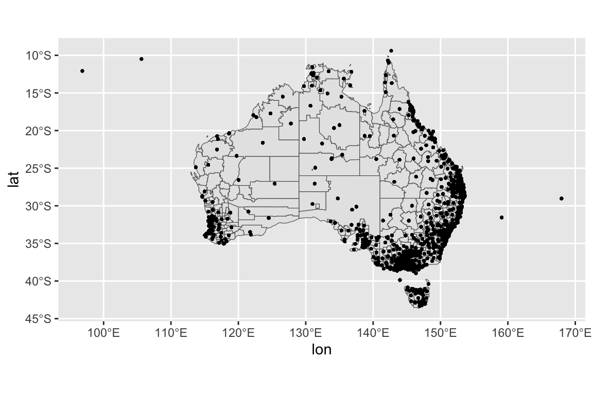
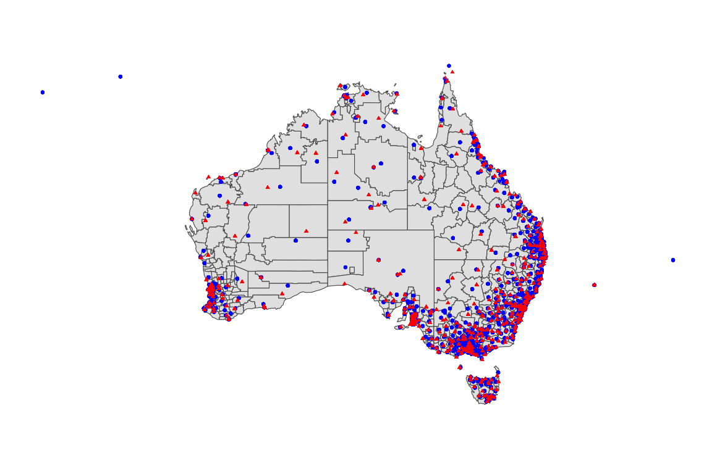
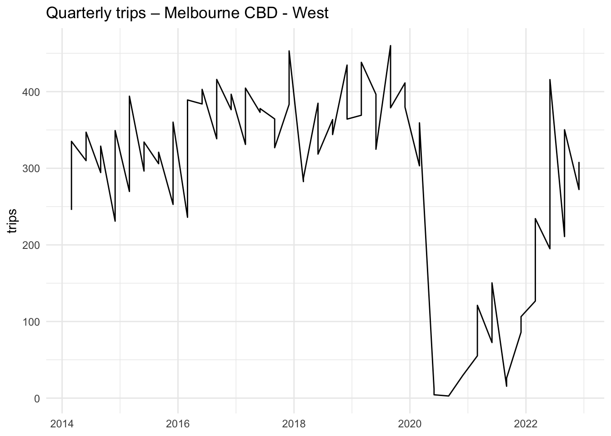

What this vignette shows
A quick tour of the ecotourism package’s tourism datasets, how to join regional metadata and quarterly counts, and (optionally) how to enrich rows with the nearest weather station information.
1 Setup
2 Data overview
List included objects and short descriptions:
Quick peeks at the two tourism datasets used here:
dplyr::glimpse(tourism_region)Rows: 2,930
Columns: 5
$ region <chr> "ACT - South West", "APY Lands", "Abbotsford", "Aberfoyle Pa…
$ lon <dbl> 148.9773, 131.3201, 145.0000, 138.6094, 150.9138, 144.8245, …
$ lat <dbl> -35.37625, -27.05758, -37.80368, -35.07996, -33.73492, -37.8…
$ region_id <int> 1, 2, 3, 4, 5, 6, 6, 7, 8, 9, 10, 11, 14, 15, 16, 17, 18, 19…
$ ws_id <chr> "949250-99999", "944740-99999", "959360-99999", "946830-9999…
dplyr::glimpse(tourism_quarterly)Rows: 50,314
Columns: 4
$ quarter <date> 2014-12-01, 2014-12-01, 2014-12-01, 2014-12-01, 2014-12-01,…
$ purpose <chr> "Business", "Business", "Business", "Holiday", "Holiday", "B…
$ trips <dbl> 3.2724, 1.7111, 104.5548, 96.3376, 37.1830, 11.2575, 67.2443…
$ region_id <int> 4, 6, 9, 9, 14, 16, 16, 20, 20, 23, 29, 29, 30, 30, 32, 33, …3 Join regional metadata to quarterly counts
We keep only rows with a valid region name after the join.
tourism <- tourism_quarterly |>
dplyr::left_join(tourism_region, by = "region_id") |>
dplyr::filter(!is.na(region))
dplyr::glimpse(tourism)Rows: 64,336
Columns: 8
$ quarter <date> 2014-12-01, 2014-12-01, 2014-12-01, 2014-12-01, 2014-12-01,…
$ purpose <chr> "Business", "Business", "Business", "Business", "Holiday", "…
$ trips <dbl> 3.2724, 1.7111, 1.7111, 104.5548, 96.3376, 37.1830, 11.2575,…
$ region_id <int> 4, 6, 6, 9, 9, 14, 16, 16, 20, 20, 23, 29, 29, 29, 29, 29, 2…
$ region <chr> "Aberfoyle Park", "Acton", "Acton", "Adelaide", "Adelaide", …
$ lon <dbl> 138.6094, 144.8245, 149.1162, 138.6005, 138.6005, 151.7012, …
$ lat <dbl> -35.07996, -37.86191, -35.27973, -34.92611, -34.92611, -24.3…
$ ws_id <chr> "946830-99999", "948650-99999", "949260-99999", "946750-9999…Tip
If you only need a subset of columns, select them first to keep memory small, for example:
select(region_id, quarter, visitors, lon, lat).
4 Optional: add nearest weather station metadata
If your quarterly table contains a ws_id, you can join station attributes:
tourism <- tourism |>
dplyr::left_join(ecotourism::weather_stations, by = "ws_id")5 A quick map
We’ll plot tourism site coordinates and, when available, their weather stations.
# Keep rows with geographic coordinates
spots <- tourism |> dplyr::filter(!is.na(lon), !is.na(lat))
# Convert to sf (WGS84)
spots_sf <- sf::st_as_sf(spots, coords = c("lon","lat"), crs = 4326, remove = FALSE)
# Australia basemap
aus <- rnaturalearth::ne_states(country = "australia", returnclass = "sf")
# Plot
ggplot() +
geom_sf(data = aus, fill = "grey95", color = "grey60", linewidth = 0.3) +
geom_sf(data = spots_sf, color = "#2C7FB8", alpha = 0.8, size = 1.6) +
coord_sf(xlim = c(110, 155), ylim = c(-45, -10), expand = FALSE) +
labs(title = "Tourism Locations in Australia", x = NULL, y = NULL) +
theme_minimal(base_size = 12) +
theme(panel.grid.major = element_line(color = "grey90"))
If station coordinates stn_lon and stn_lat are present, overlay them too:
if (all(c("stn_lon","stn_lat") %in% names(tourism))) {
ggplot() +
geom_sf(data = aus, fill = "grey95", color = "grey60", linewidth = 0.3) +
geom_point(data = tourism, aes(x = lon, y = lat),
alpha = 0.8, size = 2) +
geom_point(data = tourism, aes(x = stn_lon, y = stn_lat),
shape = 17, size = 1.5) +
coord_sf(xlim = c(110, 155), ylim = c(-45, -10), expand = FALSE) +
labs(title = "Tourism Locations and Weather Stations",
x = NULL, y = NULL) +
theme_minimal(base_size = 12) +
theme(panel.grid.major = element_line(color = "grey90"))
}
6 Simple time-series slice
Plot quarterly visitors for one example region (pick the first with data).
if (all(c("region","quarter","trips") %in% names(tourism))) {
example_region <- tourism |>
dplyr::filter(!is.na(trips)) |>
dplyr::count(region, wt = trips, name = "total", sort = TRUE) |>
dplyr::slice(1) |>
dplyr::pull(region)
tourism |>
dplyr::filter(region == example_region) |>
ggplot(aes(x = quarter, y = trips)) +
geom_line() +
labs(title = paste0("Quarterly trips – ", example_region),
x = NULL, y = "trips") +
theme_minimal()
}